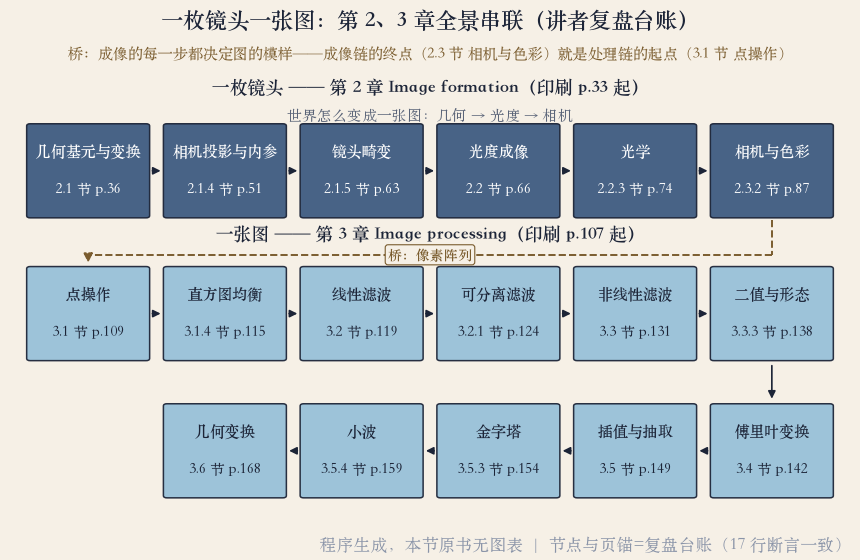

复盘课 · 第 2、3 章
一枚镜头一张图：两章串成一张网
第 2 章讲世界怎么变成图。
第 3 章讲图怎么被加工。
两章合起来是一条成像链、一条处理链。
二十二集的内容并成十七站。
依据：原书第 33、107 页
两条链
成像链六站：几何、光度、相机
处理链十一站：点操作到几何变换
十七站都标了原书的节和页
正课第二十七集
01 / 6
复盘台账 · 程序生成图
那张网：六站加十一站
上面一行六站，是第 2 章的成像链。
下面两行十一站，是第 3 章的处理链。
中间那条桥：相机的像素，正好喂给点操作。
每一站都标了原书的节和页。
依据：程序生成实验

成像链六站与处理链十一站的全景图｜程序生成，未用教材或论文原图
正课第二十七集
02 / 6
第 2 章 Image formation · 原书第 33 页起
一枚镜头：世界变成图的三步
几何基元与变换：点和线写成齐次坐标。
投影与畸变：针孔模型把三维压到二维。
光度、光学、色彩：光怎么反射，镜头怎么聚光。
镜头干完活，世界变成一排排像素。
依据：原书第 36、51、63、66、74、87 页
六站与页码
变换 p.36 → 投影 p.51
畸变 p.63
光度 p.66 → 光学 p.74
色彩 p.87
正课第二十七集
03 / 6
第 3 章 Image processing · 原书第 107 页起
一张图（上）：从像素到频率
点操作：一个像素进，一个像素出。
线性滤波：卷积就是加权求和。
邻域还有中值、双边和形态学。
傅里叶换一组基，卷积变成乘法。
依据：原书第 109、115、119、124、131、138、142 页
处理链前四站
点操作与直方图 p.109 / 115
线性滤波与可分离 p.119 / 124
非线性与二值 p.131 / 138
傅里叶 p.142
正课第二十七集
04 / 6
第 3 章 · 多尺度与几何
一张图（下）：层与形
金字塔：逐层模糊减半，拉普拉斯存差值。
小波：另一种多尺度表示。
几何变换：参数、网格、特征三小节。
处理链最后一站又回到矩阵。
依据：原书第 149、154、159、168 页
互为地基
卷积 → 金字塔与小波
齐次坐标 → 投影与几何变换
点操作 → 直方图
插值抽取 → 金字塔
正课第二十七集
05 / 6
收束 · 台账与预告
账理平了，进第 4 章
十二集实验都有数值存档，共三百五十八条断言。
处理链每一站都踩着存档。
习题还有两道留白，继续有效。
下一集进第 4 章：模型拟合与优化。
依据：本集实验存档；原书第 181、187 页
留白与下一步
习题 3.5 第四步：选做加视频帧
习题 3.25：手点对应点
下一集：从猜到证明
正课第二十七集
06 / 6